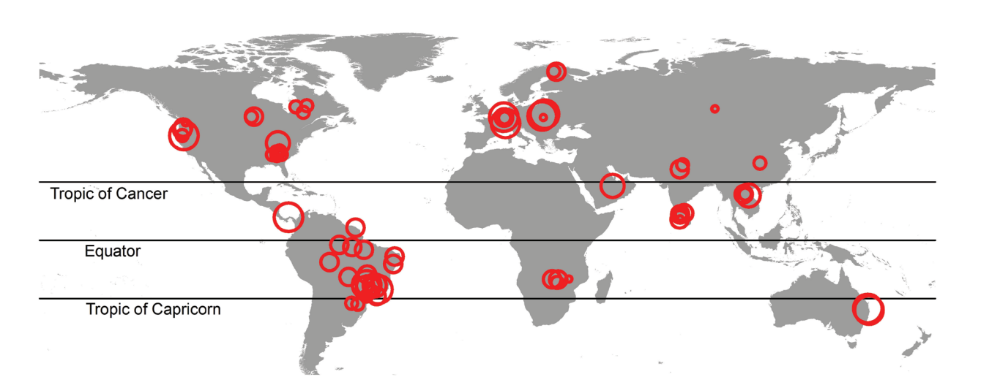
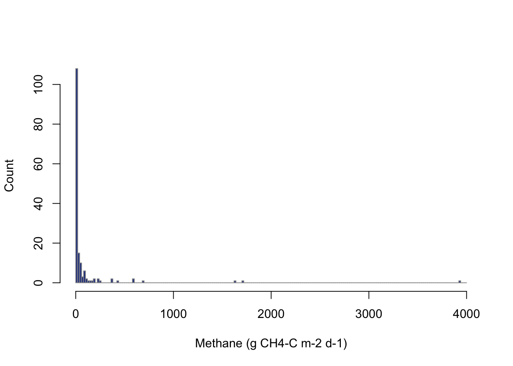
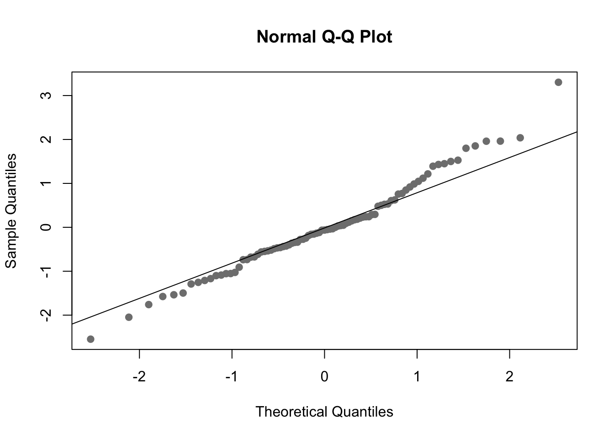
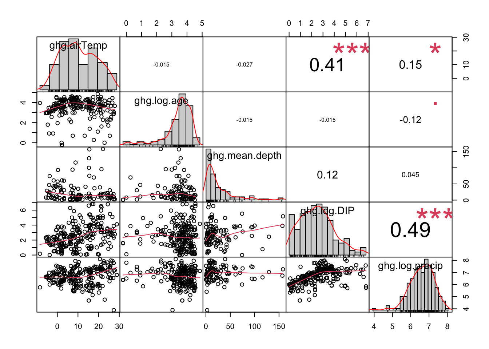
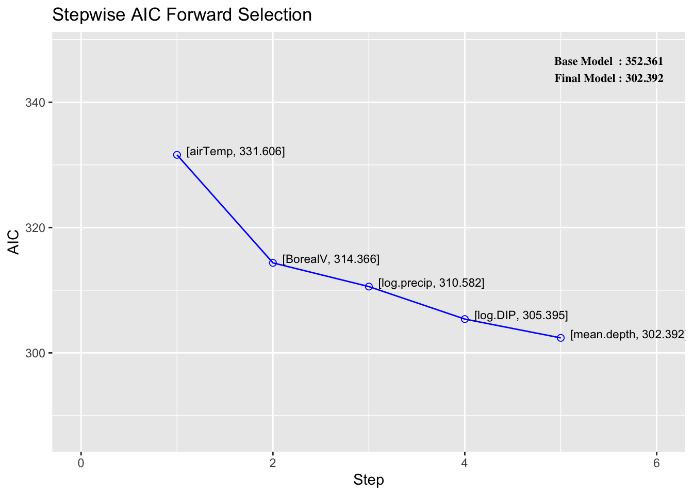

Chapter 6 Linear regression, model selection, and prediction in R
by Heather Kropp for ENVST 325: Introduction to Environmental Data Science Hamilton College
6.1 Learning objectives
- Conduct multiple linear regression in R
- Transform variables for linear analysis
- Consider model selection
- Make predictions from a regression model
- Analyze greenhouse gas emissions data from anthropogenic driven sources
6.2 New functions & syntax
log,unique,lm, summary, qqnorm, qqline, rstandard, fitted.values, abline, chart.Correlation, ols_step_forward_aic, predict
6.3 The problem: greenhouse gas emssisions from anthropogenic land use
There are many areas around the world that rely on surface water in rivers and lakes for a drinking and irrigation source. Man-made reservoirs are a common water management approach that involves constructing a dam to slow the flow of water in a river so that a lake may form upstream of the dam. This lake formation can ensure a stable water source for drinking and irrigation and electricity. However, reservoirs involve inundating areas of land that would not have been covered in water without a dam. Many of these areas would previously be covered with vegetation with soils rich in organic matter. There is an increasing concern that reservoirs can be sources of greenhouse gases, especially methane. Methane is a highly potent greenhouse gas. Methane is produced by bacteria in soils saturated with water with little oxygen. The flooded vegetation and organic rich soils offer ample food sources for bacteria and the low oxygen water environment is expect to promote greater production of methane than if the land was left unflooded. A new study by Deemer et al. compiled measurements of greenhouse gases taken from reservoirs around the world to examine the potential for reservoirs to be a source of greenhouse gas emissions. In this exercise, you will examine how much methane global reservoirs produce and examine the characteristics that drive greater methane production.
A dam helps form Lake Vyrnwy, a man-made reservoir. Source: Ray Jones CC2
6.3.1 The data: greenhouse gases and reservoir characteristics
The data collected by Deemer is a synthesis data set. A synthesis aim to compile data collected from a range of different studies to draw conclusions over a broader spatial scale with greater replication than the individual studies alone. However, synthesis often have to merge different observation approaches and some data may be missing if the original study did not collect it.

The Deemer_GHG_Data.csv file contains the greenhouse gas and reservoir characterstic data from sites shown in the map above.
# read in greenhouse gas data from reservoirs
ghg <- read.csv("/cloud/project/activity05/Deemer_GHG_Data.csv") System Latitude Longitude Amazon Region Country Alpine
1 Acton Reservoir 39.57 -84.73 no Temperate United States
2 Al-Wihdeh 32.73 35.87 no Temperate Jordan/Syria
3 Alamo Lake 34.25 -113.50 no Temperate United States
4 Allatoona 34.14 -84.64 no Temperate United States
5 Alouette Lake 49.32 -122.43 no Temperate Canada
6 Angerman 63.19 17.23 no Boreal Sweden
hydropower Use ch4 co2 age chlorophyll.a mean.depth
1 no Recreation NA 31.80 50 59.00 3.9
2 unknown NA 1445.45 3 NA NA
3 no Flood Control NA -199.22 35 3.58 NA
4 yes 22.12 446.38 63 4.40 9.2
5 yes NA -111.00 74 NA NA
6 yes NA 30.80 70 NA NA
surface.area volume Residence.Time..days. DIP precipitation runoff airTemp
1 2.50 NA 292 21.64 1039 459 10.61
2 0.82 0.01 247 138.71 349 124 19.60
3 4.22 NA NA 0.07 208 0 20.09
4 49.00 0.45 36 43.84 1339 468 15.37
5 16.00 NA NA 40.14 1769 1198 8.24
6 854.00 NA NA 1.95 592 279 3.07There are a few main columns of data to focus on here. ch4 describes the methane flux (\(mg CH_4-C\) \(m^{-2}\) \(day^{-1}\)) in carbon equivalents emitted from the reservoir. The co2 column gives the carbon dioxide flux (\(mg CO_2-C\) \(m^{-2}\) \(day^{-1}\)) in carbon equivalents. If a carbon dioxide flux is negative, that means that the lake takes in more carbon dioxide than it emits. There are explanatory variables that also can influence the release of greenhouse gases. The depth of the reservoir (mean.depth, meters) can affect the exchange of oxygen, water chemistry, and microclimate. The age of the reservoir (age, years) can influence the availability of carbon and oxygen newly flooded vegetation and soils for microbes. The chlorophyll A measurements indicate how much photosynthesizing organisms are living in the water (chlorophyll.a in \(\mu g L^{-1}\)). The surface area (surface.area in \(km^2\)) and volume (volume in \(km^3\)) can influence water conditions. The following are all variables modeled from global data that were used by the authors: dissolved inorganic phosphorous (DIP \(kg ~km^{-2}~ yr^{-1}\)) influences the growth of microbes and photosynthetic organisms. Precipitation influences the flow of new water into the reservoir (precipitation, \(mm~ yr^{-1}\)),
runoff is the total amount of water from precipitation that flows into a drainage basin (runoff, \(mm~ yr^{-1}\)), and the air temperature influences the conditions for microbial and aquatic organisms as well as water chemistry (airTemp, \(^\circ C\)).
You will also find it helpful to install and load the following packages:
6.4 The approach: Linear regression in R
6.4.1 Transforming variables
Methane emissions around bodies of water are a type of observation that tends to have many observations at low values with occasional very high value. The histogram of the methane data below confirms this.

Keep in mind that the linear assumption for the ordinary least squares regression is: the parameters are linear, describing a linear relationship between two variables. This assumption simply gives the structure for \[y = \beta_0 + \beta_1 * x\]. However, either y or x does not have to be on a linear scale. In fact, y or x can be transformed to allow the data to be described on a linear scale. The most common type of transformation is a log-scale transformation. In R, the function log takes the natural log of data. The natural log often explains more relationships in environmental data than log base 10. Let’s transform the methane data before working with it. For the methane data, values of zero exist and there is no natural log of zero. However, including adding a value of one will shift all the data by a value, and any value that was zero on the linear scale will be zero on the log scale log(1) = 0.

You can see that the log scale results in a linear relationship between temperature and methane. Now the interpretation of the data in that linear relationship changes. As air temperature increases by one value, we are now looking at the increase in methane by one value on the log(ch4+1) scale.
Variables like total annual precipitation, age of the reservoir, and dissolved inorganic phosphorous would also be good values to transform due to their distribution and wide range of values.
6.4.2 Binary variables
It can be useful to control for categorical binary variables in a regression. A slope coefficient for these variables represents an addition or subtraction (if negative) to the intercept. This can account for an expectation for values of data being shifted higher or lower within this group category. There are a few variables where this might be helpful. Let’s use the unique function to look at all of the regions. Unique will print out each unique object in a vector with no duplicates.
[1] "Temperate" "Boreal" "Subtropical" "Tropical" ifelse will be helpful here to make a binary variable (just like making a flag in the last tutorial). It will be helpful to isolate two regions. Boreal regions are known for their methane producing wetlands with organic rich soils and vegetation adapted to flooding, and thus we might expect that the flooded regions and the vegetation around a reservoir may be more prone to producing methane. We will also isolate tropical regions. There are studies that indicate that tropical lakes emit more methane so we might also expect emissions to differ from subtropical and temperature regions.
# binary variable for boreal region
ghg$BorealV <- ifelse(ghg$Region == "Boreal",1,0)
# binary variable for tropical region
ghg$TropicalV <- ifelse(ghg$Region == "Tropical",1,0)We will also want to create a variable for alpine regions (high elevation). Alpine regions are known for long term snow cover and glaciers that bring high amounts of cold, nutrient depleted melt water.
Finally we will also add a variable that indicates that the reservoir is knowingly maintained for hydropower usage.
6.4.3 Running a multiple regression
In R, the lm function allows you to specify a linear model and will automatically run an ordinary least squares regression. Here, we will focus on a multiple regression. The function can be easily altered to include only a single variable for a simple linear regression. The lm function expects a specific order of arguments where y ~ x1 + x2 where y is the dependent variable, and x is one or more independent variables. Let’s set up a multiple regression for our methane fluxes that looks at the main variables that I predict will have the greatest impact: air temperature, reservoir age, reservoir depth, log-scale dissolved inorganic phosphorous, precipitation, and presence in a boreal region.
# multiple regression
# creates a model object
mod.full <- lm(log.ch4 ~ airTemp+
log.age+mean.depth+
log.DIP+
log.precip+ BorealV, data=ghg) #uses the data argument to specify dataframeYou can see the full model results using the summary function and referring to the model name. This will give you key information like the coefficients table and r-squared.
Call:
lm(formula = log.ch4 ~ airTemp + log.age + mean.depth + log.DIP +
log.precip + BorealV, data = ghg)
Residuals:
Min 1Q Median 3Q Max
-3.1437 -0.6877 -0.0805 0.6668 4.1080
Coefficients:
Estimate Std. Error t value Pr(>|t|)
(Intercept) 8.413344 2.245865 3.746 0.000337 ***
airTemp 0.136628 0.018754 7.285 2.00e-10 ***
log.age -0.161456 0.125556 -1.286 0.202177
mean.depth -0.010156 0.004548 -2.233 0.028336 *
log.DIP 0.431204 0.141994 3.037 0.003227 **
log.precip -1.166775 0.339196 -3.440 0.000927 ***
BorealV 1.936664 0.460385 4.207 6.72e-05 ***
---
Signif. codes: 0 '***' 0.001 '**' 0.01 '*' 0.05 '.' 0.1 ' ' 1
Residual standard error: 1.31 on 80 degrees of freedom
(180 observations deleted due to missingness)
Multiple R-squared: 0.5082, Adjusted R-squared: 0.4714
F-statistic: 13.78 on 6 and 80 DF, p-value: 1.091e-10One thing to note is that almost half of the data was omitted due to a missing value in at least one of the columns included.
Assuming a standard confidence level of \(\alpha\)= 0.05, you can see that some variables are related to methane fluxes but others do not have the relationship that I predicted.
6.4.4 Checking assumptions
Before moving on to closely interpreting this regression, it is a good idea to check the main assumptions of the regression:
- Relationships are linear
- Residuals are normally distributed
- Residuals have equal variance
- Residuals are independent and random
- In a multiple regression, independent variables are not highly correlated (multicollinearity)
It will be helpful to isolate standardized residuals (rstandard) and the fitted values from the regression line at each observation (fitted.values) for these tests.
6.4.4.1 1. Normality
You can use a qqplot to check normality of the residuals. For small data sets, the Shapiro-Wilks test (shapiro.test) can also be used to check normality.

Shapiro-Wilk normality test
data: res.full
W = 0.98232, p-value = 0.2817You can see there are a few values that aren’t perfect but the data mainly follows the line. You can also see that the shapiro.test indicates the residuals do not significantly deviate from a normal distribution.
6.4.4.2 2-4. Residuals
Many of the issues outlined in assumptions 2-4 can be seen using a residual plot and background knowledge about the data. A residual plot simpily uses the fitted values and standard residuals. You can add a horizontal line to the plot at zero for easier comparison.

Here the residuals are not in major violation of any assumptions.
6.4.5 5. Multicollinearity
The assumption of multicollinearity applies to multiple regressions only. Reliable slope coefficients assume that each independent variable is not related to other independent variables in the model. You can check this easily using the chart.Correlation function in the PerformanceAnalytics package. You simply need a data frame of just the variables to compare.
# isolate continuous model variables into data frame:
reg.data <- data.frame(ghg$airTemp,
ghg$log.age,ghg$mean.depth,
ghg$log.DIP,
ghg$log.precip)
# make a correlation matrix
chart.Correlation(reg.data, histogram=TRUE, pch=19)Warning in par(usr): argument 1 does not name a graphical parameter
Warning in par(usr): argument 1 does not name a graphical parameter
Warning in par(usr): argument 1 does not name a graphical parameter
Warning in par(usr): argument 1 does not name a graphical parameter
Warning in par(usr): argument 1 does not name a graphical parameter
Warning in par(usr): argument 1 does not name a graphical parameter
Warning in par(usr): argument 1 does not name a graphical parameter
Warning in par(usr): argument 1 does not name a graphical parameter
Warning in par(usr): argument 1 does not name a graphical parameter
Warning in par(usr): argument 1 does not name a graphical parameter
A correlation coefficient varies from 0-1 with 1 indicated a perfect correlation. There is no established threshold for multicollinearity, but some studies indicate that correlation coefficients greater than 0.7-0.8 indicate that both variables are too correlated to include. The solution to this is to choose just one variable knowing that it may represent other underlying variables and processes (include this in your interpretation). The other solution is to create an index that represents both variables.
Here, there are a few variables that have a fair amount of correlation, but there is not a severe enough correlation to cause concern here.
6.5 Model selection
Model selection is one of the most challenging parts of designing an analysis. My selection of initial variables related to my biophysical understanding of microbial respiration, aquatic ecosystems, and microclimate. However, you can see that some variables are simply not significant and indicate no relationship. This outcome would be useful to report for inference. Understanding which variables influence methane emission and by how much provides more information about when and why reservoirs may be significant sources of methane. However, if I am interested in prediction, I will only want to include significant variables that greatly describe the variability in methane to reduce data collection and issues with over-fitting. Model selection is the process of eliminating variables and parameters that are not critical to the objective of the analysis and the outcomes of the model.
There are various ways of assessing model performance. The \(R^2\) gives information on the amount of variability in y explained by the model. The adjusted \(R^2\) penalizes the addition of extra independent variables. The Akaike information criterion (AIC) is a measure of model fit. The smaller the value, the better the model fit. Comparing these measures between candidate models, a series of possible models to compare. Model selection can help with statistically selecting variables that best describe the independent variable without adding unnecessary variables.
You can assess the importance of your variables in a multiple regression using stepwise selection. Stepwise selection iteratively adds (forward) or removes (backward) variables to calculate their impact on the model. Let’s look at forward stepwise selection using the function ols_step_forward_aic function from the olsrr package. The only argument needed is your full model.
Stepwise Summary
-------------------------------------------------------------------------
Step Variable AIC SBC SBIC R2 Adj. R2
-------------------------------------------------------------------------
0 Base Model 352.361 357.293 104.103 0.00000 0.00000
1 airTemp 331.606 339.003 83.302 0.23015 0.22109
2 BorealV 314.366 324.230 66.635 0.38289 0.36819
3 log.precip 310.582 322.911 63.085 0.42258 0.40171
4 log.DIP 305.395 320.190 58.559 0.46836 0.44243
5 mean.depth 302.392 319.653 56.274 0.49807 0.46709
-------------------------------------------------------------------------
Final Model Output
------------------
Model Summary
---------------------------------------------------------------
R 0.706 RMSE 1.269
R-Squared 0.498 MSE 1.731
Adj. R-Squared 0.467 Coef. Var 52.761
Pred R-Squared 0.393 AIC 302.392
MAE 0.963 SBC 319.653
---------------------------------------------------------------
RMSE: Root Mean Square Error
MSE: Mean Square Error
MAE: Mean Absolute Error
AIC: Akaike Information Criteria
SBC: Schwarz Bayesian Criteria
ANOVA
-------------------------------------------------------------------
Sum of
Squares DF Mean Square F Sig.
-------------------------------------------------------------------
Regression 139.098 5 27.820 16.076 0.0000
Residual 140.174 81 1.731
Total 279.271 86
-------------------------------------------------------------------
Parameter Estimates
----------------------------------------------------------------------------------------
model Beta Std. Error Std. Beta t Sig lower upper
----------------------------------------------------------------------------------------
(Intercept) 7.841 2.210 3.548 0.001 3.443 12.238
airTemp 0.142 0.018 0.816 7.679 0.000 0.105 0.178
BorealV 2.065 0.451 0.467 4.578 0.000 1.168 2.963
log.precip -1.158 0.340 -0.353 -3.401 0.001 -1.835 -0.480
log.DIP 0.399 0.140 0.283 2.845 0.006 0.120 0.679
mean.depth -0.010 0.005 -0.174 -2.190 0.031 -0.019 -0.001
----------------------------------------------------------------------------------------
Call:
lm(formula = paste(response, "~", paste(preds, collapse = " + ")),
data = l)
Coefficients:
(Intercept) airTemp BorealV log.precip log.DIP mean.depth
7.840642 0.141549 2.065391 -1.157859 0.399330 -0.009994 
THe main thing that you want to interpret here is how much the AIC and adjusted \(R^2\) change with each added variable. You can see here that the log(DIP+1) had almost no influence on the model despite being statistically significant. This information is helpful for both inference and prediction. Adding the air temperature variable increased the adjusted \(R^2\) and decreased the AIC by the greatest magnitude.
6.6 Predictions
Regression lines can be used to make predict for missing data. In R, the predict.lm function can be used to predict the value from the regression model for given input data values. Here, you need to specify the input model, input independent variables, and the interval to return. confidence returns the 95% confidence interval whereas prediction returns the interval for a single point of data. The prediction variable accounts for the extra variability of each regression point around the line (think about that error term in the regression equation).
# prediction with interval for predicting a point
predict.lm(mod.full, data.frame(airTemp=20,log.age=log(2),
mean.depth=15,log.DIP=3,
log.precip=6, BorealV=0),
interval="prediction") fit lwr upr
1 5.174622 2.347429 8.001815# look at prediction with 95% confidence interval of the mean
predict.lm(mod.full, data.frame(airTemp=20,log.age=log(2),
mean.depth=15,log.DIP=3,
log.precip=6, BorealV=0),
interval="confidence") fit lwr upr
1 5.174622 4.081764 6.267486.7 Conclusions
You can see that reservoirs are a significant source of methane in some cases, but some reservoirs produce more methane than others. It seems that areas with high air temperatures, lower amounts of annual precipitation, or in boreal regions are prone to higher levels of methane. With this information, we can understand the impact of reservoirs on greenhouse gas emissions across the globe or predict the carbon footprint of a proposed reservoir. You will practice implementing, designing,and selecting linear models further in class and homework.